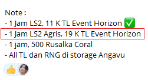
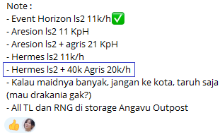

Google Stopwatch
Note:
- Buka tab baru, search
Stopwatchdi Google - Play dulu 1–3 detik, yang penting stopwatch udah jalan
- Buka browser console, tekan F12
- Paste, ketik
allow pastingterus enter jika tidak bisa paste
Progress Hourly (Tanpa Agris)
Contoh:
- Total perolehan TL dalam satu shift:
55000 - TL per jam sesuai note:
19000 - Progress: 2 Hours 53 Minutes 41 Seconds
Perhitungan
Progress Hourly (Dengan Agris)
Note:
- Harus ada patokan Agris yang digunakan dan total TL per jam


Contoh:
- Total TL selama shift:
55000 - Note dari TL per jam pake Agris:
19000 - Note dari TL per jam berapa Agris:
32000 - Note dari TL per jam tanpa Agris:
11000 - Agris yang digunakan selama shift:
32000 - Total Time: 4 Hours 16 Minutes 21 Seconds
- Time with Agris: 1 Hours 0 Minutes 0 Seconds
- Time without Agris: 3 Hours 16 Minutes 21 Seconds
Perhitungan
Total Progress Hourly
Contoh:
- Total progress sebelumnya adalah
360 H 51 M - Progress sekarang:
8 H 30 M - Total Hours: 369 H 21 M